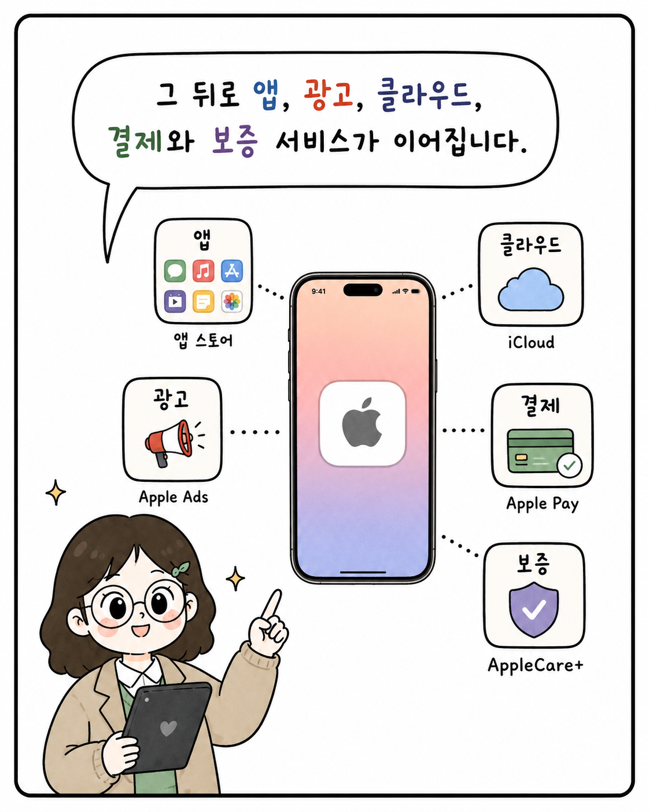

PULSE EDITORIAL · IMPLEMENTATION PLAN
애플 6컷 캐러셀을 Pulse에 넣는 방법
결론은 기존 carousel 파이프라인을 유지하면서 시리즈·피드 배포 개념을 추가하는 것입니다. 이미지와 콘텐츠는 한 번만 저장하고, 애플 회사 페이지는 원본 콘텐츠의 상시 보관소로, Pulse는 일정 기간 발견을 만드는 배포 채널로 사용합니다.
① AAPL 서비스 생태계 시리즈 생성 → ② 이미지 6장을 한 편의 콘텐츠로 등록 → ③ 애플 회사 페이지에 상시 노출 → ④ 같은 콘텐츠를 Pulse 배포 레코드가 재사용 → ⑤ 최초/재방문 피드에서 2~3번째에 안정적으로 배치합니다. 급한 공시·진행 중 리서치는 절대 밀어내지 않습니다.
최종 콘텐츠 구조
회사 AAPL └─ 시리즈: apple-services-ecosystem ├─ 1편: 왜 서비스가 중요해질까? │ └─ 이미지 01~06 ├─ 2편: 서비스 마진은 어떻게 봐야 하나? └─ 3편: 앱스토어 규제는 무엇을 바꾸나? 1편 콘텐츠 ├─ 애플 회사 소개: 상시 조회 └─ Pulse 배포 ├─ 노출 기간 ├─ 대상 사용자 ├─ early / standard 배치 └─ 노출 종료 후에도 회사 페이지에는 유지
회사 페이지와 피드는 별도 콘텐츠를 만들지 않습니다. 두 화면 모두 같은 entry_id와 같은 pulse_editorial_assets를 읽습니다. 피드 재노출이 필요할 때는 이미지를 다시 올리는 대신 새 distribution만 생성합니다.
DB 설계
| 테이블 | 역할 | 핵심 필드 |
|---|---|---|
pulse_editorial_series 신규 | 종목별 콘텐츠 묶음 | id, ticker, slug, title, description, status, 생성자·시간 |
pulse_editorial_entries 확장 | 한 편의 캐러셀 원본 | 기존 필드 + nullable series_id, nullable issue_number |
pulse_editorial_assets 유지 | 슬라이드와 순서 | entry_id, position, 불변 storage_path, alt, 크기·용량 |
pulse_editorial_distributions 신규 | 원본 콘텐츠의 피드 배포 계획 | entry_id, channel, starts_at, ends_at, placement, audience, status |
series_id는 nullable로 추가해 기존 단발 콘텐츠를 그대로 유지합니다. 회사 페이지의 공개 여부는 entry의 발행 상태가 결정하고, 피드 노출 여부는 distribution이 결정합니다.
Storage 설계
pulse-editorial/ 공개 전달 버킷 1개
└─ v2/companies/AAPL/
└─ series/{series-id}/
└─ entries/{entry-id}/
└─ slides/
├─ 01-{asset-id}.png
├─ 02-{asset-id}.png
└─ 06-{asset-id}.png
- 종목별 버킷은 만들지 않습니다. 동일한 공개 읽기 정책을 가진 자산은
pulse-editorial한 버킷에 둡니다. - 현재
editorial/{entry-id}/00-image.png경로도 계속 허용해 기존 콘텐츠를 이동하지 않습니다. - 경로는 제목이 아니라 UUID를 기준으로 하므로 시리즈·콘텐츠 제목을 바꿔도 URL이 변하지 않습니다.
- 현재 1년 CDN 캐시와
upsert: false를 유지합니다. 슬라이드 수정 시 파일을 덮어쓰지 않고 새asset-id경로를 올립니다. - 공개된 자산은 archive만으로 즉시 삭제하지 않습니다. DB에서 참조가 사라진 파일만 유예 기간 후 정리합니다.
고해상도 원본이나 PSD까지 보관할 요구가 생기기 전에는 별도 원본 버킷을 만들지 않습니다. 필요해질 때만 비공개 pulse-editorial-source를 추가합니다.
확인한 입력물
적합 제공받은 6장은 모두 1122 × 1402 PNG(약 1.2~1.6MB)입니다. 현재 관리 도구의 제약인 2~8장, 장당 8MB를 만족하므로 변환이나 분할 없이 업로드할 수 있습니다.

사용자에게 보이는 결과
피드 카드의 머리는 얇게 유지합니다. 애플 아이콘 · 애플 · 리서치 읽기만 보여주고, 제목과 요약은 이미지 안에 이미 있으므로 중복 표기하지 않습니다. 아이콘과 회사명은 현재처럼 애플 회사 소개로 연결합니다.
피드 첫 진입 ├─ 긴급 공시 / 진행 중 리서치 (있으면 우선) ├─ 일반 카드 1개 ├─ [애플 6컷 캐러셀] ← 일별로 2번째 또는 3번째 └─ 나머지 일반 카드 캐러셀 카드 [애플 로고] 애플 · 리서치 읽기 1 / 6 ┌─────────────────────────────────────┐ │ │ │ 제공 이미지 한 장 │ ← 좌우로 자연스럽게 스와이프 │ │ └─────────────────────────────────────┘ 좌우로 넘겨 보기 ━ ● ○ ○ ○ ○
모바일은 이미지 비율을 원본 그대로 4:5로 고정하고, 데스크톱에서는 카드 폭만 넓어집니다. 자동 넘김은 넣지 않습니다. 이미지 속 문장을 읽는 콘텐츠라서 사용자가 속도를 통제해야 합니다.
개발 단계
- 호환 가능한 DB 마이그레이션.
pulse_editorial_series와pulse_editorial_distributions를 만들고 entry에 nullableseries_id를 추가합니다. 신규 FK·유니크 인덱스·발행 시간 체크·RLS/service-role 권한을 적용합니다. 기존 entry와 asset은 변경하지 않습니다. distribution 변경도 Pulse 전역 revision을 올리도록 trigger를 추가합니다. - 불변 Storage 경로와 업로드 API.
API가 entry와 asset UUID를 먼저 생성하고v2/companies/{ticker}/series/{series-id}/entries/{entry-id}/slides/{position}-{asset-id}.{ext}를 사용하게 합니다. 기존·신규 경로를 모두 허용하도록 DB path constraint를 확장합니다. 업로드 실패 시 이번 요청에서 올린 객체만 제거하는 현재 보상 로직은 유지합니다. - 관리자 콘텐츠 제작 흐름.
관리자가 종목을 고른 뒤 기존 시리즈를 선택하거나 새 시리즈를 만들 수 있게 합니다. entry 제목·요약·회차·이미지 2~8장·alt·순서를 작성하고 회사 페이지용 발행 상태를 정합니다. 별도의 Pulse 배포 패널에서 시작/종료 시간, early/standard, 대상 범위를 설정합니다. 회사 페이지와 피드 두 가지 미리보기를 발행 전에 확인합니다. - 공용 스와이프 컴포넌트.
EditorialImageCarousel은 슬라이드 렌더링만 담당합니다. 회사 페이지와PulseCard는 각각 얇은 wrapper를 두고 제목·여백·행동만 다르게 구성합니다. 6장을 가로로 놓고overflow-x-auto + scroll-snap으로 한 장씩 정렬합니다. 첫 장은 우선 로드하고 나머지는 lazy load하며 DB의 width/height로 레이아웃 이동을 막습니다. - 애플 회사 페이지에 원본 콘텐츠 배치.
현재 ‘분석 범위/리서치 축’ 자리를 애플을 읽는 시리즈로 교체합니다. 발행된 시리즈가 있는 종목은 최신 entry의 캐러셀을 보여주고, 시리즈가 없는 종목은 기존 분석 범위를 그대로 보여주는 fallback을 둡니다. 이후 한 종목에 여러 시리즈가 쌓이면 시리즈 선택과 이전 편 목록을 같은 데이터로 확장합니다. - Pulse는 distribution을 읽습니다.
피드 소스가 모든 published entry를 직접 읽는 대신, 현재 활성인 distribution과 entry·series·asset을 join합니다. candidate의source_id는 distribution ID, metadata에는entry_id와series_id를 넣습니다. 같은 entry를 나중에 재홍보해도 이미지 복제 없이 새 배포 단위로 노출 상태를 관리할 수 있습니다. - 2~3번째 안정 배치.
early distribution은 긴급 공시·진행 중 리서치를 보호한 다음 2번째 또는 3번째에 삽입합니다. 위치는user + local-date + distribution기반 해시로 정해 같은 날 새로고침해도 흔들리지 않습니다. 첫 화면에는 편집 캐러셀을 최대 1개만 둡니다. 서버와 기기 정렬 양쪽에서 같은 예외 규칙을 사용합니다. - 노출 억제와 대체.
배포 기간 종료·일시중지·숨김·학습 끄기·피로도 억제 상태면 피드 후보에서 제외합니다. 다음 활성 distribution이 있으면 대체하고 없으면 일반 피드로 채웁니다. 회사 페이지의 원본 entry는 영향을 받지 않습니다. - 접근성·분석·검수.
aria-roledescription="carousel", 현재 장, 점 버튼, 데스크톱 이전/다음, 키보드 이동, reduced motion을 제공합니다. 카드 노출뿐 아니라 최대 도달 슬라이드·마지막 장 완료·회사 페이지 이동을 distribution/entry ID 기준으로 기록합니다. 모바일 375/430px, 데스크톱, 느린 네트워크, 이미지 오류, 긴급 카드 다수 상황을 검수합니다.
수정 대상과 이유
| 대상 | 변경 | 이유 |
|---|---|---|
supabase/migrations/* | series/distribution 테이블, entry FK, path 호환 제약, revision trigger | 콘텐츠 수명과 피드 배포 기간을 분리합니다. |
src/lib/editorial/repository.ts | 회사별 시리즈 조회와 활성 distribution join | 두 화면이 같은 원본 데이터를 읽게 합니다. |
src/app/api/editorial/route.ts | series 입력, v2 불변 경로, 이미지 크기 기록 | 종목별 다중 시리즈와 장기 캐시를 안전하게 지원합니다. |
src/components/editorial/EditorialImageCarousel.tsx | 가로 스크롤·페이지 점·접근성 컨트롤 공용화 | 회사 페이지와 피드가 동일한 동작을 재사용합니다. |
companies/[ticker]/page.tsx | 시리즈가 있으면 캐러셀, 없으면 기존 분석 범위 | 점진적으로 종목별 콘텐츠를 확대할 수 있습니다. |
src/lib/pulse/sources/editorial.ts | published entry 직접 조회 → 활성 distribution 조회 | 피드 재노출과 회사 페이지 상시 보관을 분리합니다. |
src/lib/pulse/composer.ts | 긴급/활성 분석을 보호한 뒤 2~3번째에 안정 배치 | 서버 응답 자체가 올바른 순서를 갖게 하므로 분석·노출 통계도 일관됩니다. |
src/lib/pulse/device-ranking.ts | early 편집 캐러셀을 상단 혼합 예외로 허용 | 클라이언트의 개인화 정렬이 다시 캐러셀을 뒤로 보내지 않게 합니다. |
| migration/API/repository/component/ranking tests | 순서, 경로, 발행·배포 분리, 스와이프, 긴급 보호, 억제/대체 | 스토리지와 UI가 함께 바뀌므로 계층별 회귀를 막아야 합니다. |
현재 구조에서 그대로 활용하는 것
- Storage와 DB:
pulse-editorial버킷,pulse_editorial_entries,pulse_editorial_assets가 이미 있습니다. - 이미지 수·순서: 현재 API가 최대 8장, 순번 저장, 캐러셀 검증을 지원합니다. 이번 6장은 정확히 그 범위입니다.
- 회사 표기: 합성 단계가 AAPL에 애플 한국어 이름을 붙이고, 피드 아이콘/회사명은 회사 소개 페이지 링크로 이미 처리합니다.
- 기본 폴백: 편집 콘텐츠를 읽지 못해도 기존 정적 학습 카드는 사라지지 않습니다.
이번 1차에는 Supabase 마이그레이션이 필요합니다. 다만 기존 테이블을 갈아엎는 방식이 아니라 series/distribution을 추가하고 nullable FK와 신규 경로를 허용하는 backward-compatible 확장입니다. 애플을 올리기 전에 이 구조부터 넣어야 이후 종목별 시리즈를 다시 이관하지 않습니다.
배포 순서와 롤백
- 기존 코드가 그대로 작동하는 DB 마이그레이션부터 배포합니다.
- repository·API·공용 캐러셀을 배포하되 기존 entry/path 읽기를 유지합니다.
- AAPL 시리즈와 1편을 draft로 만들고 두 화면을 미리 봅니다.
- entry를 발행해 애플 회사 페이지에서 먼저 검수합니다.
- Pulse distribution을 활성화해 early 위치와 피로도 동작을 검수합니다.
- 문제가 생기면 distribution만 pause해 피드에서 즉시 제외합니다. 회사 콘텐츠와 Storage 자산은 삭제하지 않습니다.
검수 기준
- 모바일 375px, 430px 및 데스크톱에서 원본 4:5 비율·글자 선명도가 유지된다.
- 1→6 순서가 보장되고, 손가락·트랙패드·마우스·키보드 모두 한 장씩 이동한다.
- 새로고침해도 같은 날 같은 사용자에게는 동일한 2/3번째 위치다.
- 긴급 공시/진행 중 리서치가 앞자리를 차지해도 콘텐츠가 사라지거나 중복되지 않는다.
- 숨김, 학습 끄기, 만료, 억제일 때 빈 슬롯이 생기지 않는다.
- 아이콘과 ‘애플’ 텍스트는 애플 회사 소개로 이동하고, 캐러셀에는 중복 CTA가 없다.
근거
CSS scroll snap은 스크롤이 이미지 중간에서 끝나지 않고 완전한 한 장에 정렬되도록 설계된 기능입니다. MDN Scroll Snap
캐러셀은 자동 회전보다 사용자가 이동을 통제하고, 장면 상태와 조작 수단을 제공해야 합니다. W3C WAI-ARIA Carousel Pattern